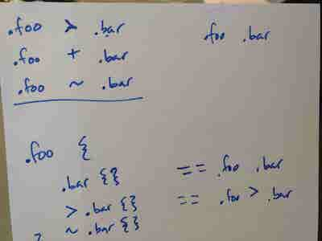

Wait, some people have said this. But I'd like to politely voice the opinion that they are wrong.
For almost two months, I have been working on a complex React project involving a complex SCSS implementation. I am new to such complex projects, and so have only just begun to really learn about what SCSS can do. And... there is a _lot_ to learn. But, it is a beautiful mess ❤️
Before diving into the project two months ago, I refreshed my awareness of Sass basics. Then, I opened the project code in my text editor, and jumped in. I was dazzled by the lines and lines of multi-coloured code, immediately puzzled when I saw countless @ $ _ and, something I hadn't expected - functions. Up until now, I hadn't written much of my own SCSS, and to be honest, I still haven't. However, I am proud that I wrote a fully-functioning each loop in SCSS last week :)
I was actually inspired to write this article after another fairly long struggle trying to style a component. I had to add a focus state to a custom checkbox. This seemingly simple task led me down a few rabbit holes. I learned a lot about the difficulties of styling a custom checkbox (i.e. one that is not browser-implemented).
After reading a few articles and finding lots of similar but differing opinions, I asked another developer, Nevan, to come and help me.
.cp-#{$type}__input:focus {
~ .cp-#{$type}__dummy {
border-color: cp-get-color-action(cta);
}
~ .cp-#{$type}__label {
font-weight: 700;
}
}
Above is code from the project. I knew I had to work on this specific piece of code in order to get a focus state on the checkboxes. See the little tildes (~)? Nevan pointed out to me that these can be used as a special CSS selector, making the general sibling combinator possible.
We talked through different CSS selectors and Nevan drew some out for me. Once I'd learned what the general sibling combinator does, I was able to write the below code, which gave me a nice focus state for my checkbox:
.cp-#{$type}__input:checked:focus {
~ .cp-#{$type}__dummy {
box-shadow: 0 0 0 0.075rem cp-get-color(base), 0 0 0 0.2rem cp-get-color-action(cta);
}
I have come to realise that a lovely side-effect of working on a large project & using SCSS has been an increasing awareness of how & where to implement accessibility. I will write about this in another blog post. One thing I gained a stronger awareness of (simply from working with checkboxes) is that it's important to progressively enhance UI components, so that a fancy custom one is able to fall back to the default browser styles and functionality. This way, a user can still access the UI if JavaScript or CSS fail.
In conclusion to my first two months on a big project, I now know that getting confused, spending a long time studying many different files & folders, and asking other developers for help is a right of passage to becoming a better developer. I completed CSS Diner a long time ago. However, nothing increases your learning power more than working on something big, real, confusing and frustrating ;)